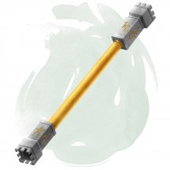
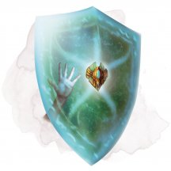
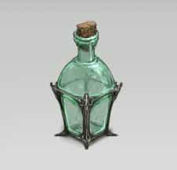
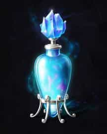
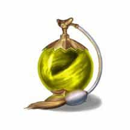

- Жезл, очень редкий (требуется настройка)
- Рекомендованная стоимость: 5 001-50 000 зм
У этого жезла ребристое навершие, и он обладает следующими свойствами:
Бдительность. Пока вы держите жезл, вы совершаете с преимуществом проверки Мудрости (Восприятие) и проверки инициативы.
Заклинания. Пока вы держите этот жезл, вы можете действием наложить им одно из следующих заклинаний: видение невидимого [see invisibility], обнаружение болезней и яда [detect poison and disease], обнаружение зла и добра [detect evil and good] или обнаружение магии [detect magic].
Защитная аура. Вы можете действием воткнуть рукоятку жезла в землю, после чего навершие будет испускать яркий свет в пределах 60 футов и тусклый свет в пределах ещё 60 футов. Находясь в области яркого света, вы и все дружественные вам существа получаете бонус +1 к КД и спасброскам, а также можете чувствовать местоположение всех невидимых враждебных существ, тоже находящихся в области яркого света.
Навершие жезла перестаёт светиться, оканчивая эффект, через 10 минут, или когда какое-нибудь существо действием выдернет его из земли. Это свойство нельзя использовать повторно до следующего рассвета.
Магические предметы
- Жезл, очень редкий
- Рекомендованная стоимость: 5 001-50 000 зм
Если вы держите этот жезл, вы можете действием активировать его. После этого жезл мгновенно телепортирует вас и до 199 других согласных существ, которых вы видите, в райское место между планами. Вы сами определяете вид этого райского места. Это может быть тихий сад, уютная лужайка, шумная таверна, огромный дворец, тропический остров, фантастический карнавал, или что вы ещё придумаете. Вне зависимости от внешнего облика, там хватает воды и пищи для пропитания всех гостей. Всё остальное, с чем можно взаимодействовать в этом месте, существует только там. Например, цветок, сорванный в саду, исчезнет, если его вынести наружу.
За каждый час, проведённый в райском месте, посетитель восстанавливает хиты, как если бы он потратил 1 Кость Хитов. Кроме того, существа не стареют, находясь в раю, хотя время течёт как обычно. Посетители могут находиться в этом месте не больше 200 дней, разделённых на число присутствующих существ (округляя в меньшую сторону).
Когда отведённое время заканчивается или вы действием оканчиваете эффект, все посетители возвращаются в места, которые они занимали до активации жезла, или в свободном пространстве, ближайшем к прошлому местонахождению. Жезл нельзя использовать повторно, пока не пройдёт 10 дней.

- Жезл, очень редкий (требуется настройка)
- Рекомендованная стоимость: 5 001-50 000 зм
Держа этот жезл, вы можете реакцией поглотить заклинание, нацеленное только на вас и не имеющее зоны воздействия. Эффект поглощённого заклинания отменяется, а его энергия — но не само заклинание — сохраняется в жезле. Уровень поглощённой энергии равен уровню заклинания, с которым оно накладывалось. Жезл за весь свой срок существования может впитать не более 50 уровней энергии. Когда жезл впитает 50 уровней энергии, больше он никогда не сможет их поглощать, и если вы станете целью заклинания, которое жезл мог бы поглотить, жезл никак не отреагирует.
Когда вы настраиваетесь на жезл, вы узнаёте, сколько уровней энергии успел впитать жезл, и сколько энергии хранится в нём на данный момент.
Если вы — заклинатель и держите этот жезл, вы можете превратить хранящуюся в нём энергию в ячейки заклинаний для накладывания подготовленных или известных вам заклинаний. Вы можете создавать ячейки с уровнем не больше тех, что уже есть у вас, и при этом не больше 5-го уровня. Вместо своих ячеек вы используете хранящуюся в жезле энергию, во всём же остальном накладываете заклинание как обычно. Например, вы можете использовать 3 уровня энергии, хранящейся в жезле, в качестве ячейки заклинания 3-го уровня.
В найденном жезле уже хранится 1к10 уровней энергии. Жезл, не способный больше поглощать заклинания, в котором не осталось энергии, перестаёт быть магическим.
- Доспех (легкий, средний, тяжелый), очень редкий (требуется настройка)
- Рекомендованная стоимость: 5 001-50 000 зм
Этот отвратительный доспех сформирован из чёрного хитина, под которым пульсируют вены и блестят красные сухожилия. Чтобы настроиться на этот предмет, вы должны носить его в течение всего периода настройки, в течение которого в вас врастают усики на внутренней стороне .
Пока вы носите этот доспех, вы получаете бонус +1 к КД, и вы получаете сопротивление урону следующих видов: некротическая энергия, психическая энергия и яд.
Симбиотическая природа. Доспех не может быть снят с вас, пока вы настроены на него, и вы не можете добровольно закончить свою настройку на нём. Если на вас используют заклинание, которое снимает проклятие, то ваша настройка на доспехе оканчивается, и он отделяется от вас.
Доспеху требуется свежая кровь для питания. Сразу же после того, как вы заканчиваете продолжительный отдых, вы должны скормить броне половину оставшихся костей хитов (округляя вверх), иначе получите 1 степень истощения.

- Доспех (щит), очень редкий (требуется настройка)
- Рекомендованная стоимость: 5 001-50 000 зм
Если вы держите этот щит, вы можете бонусным действием произнести командное слово, чтобы он ожил. Щит поднимается в воздух и парит в вашем пространстве, защищая так, как если бы вы его использовали, но ваши руки при этом свободны. Щит остаётся живым 1 минуту, пока вы не окончите эффект бонусным действием или пока вы не станете недееспособным или не умрёте, после чего щит падает на землю или в вашу руку, если она свободна.
- Доспех (любой тяжёлый), очень редкий (требуется настройка)
- Рекомендованная стоимость: 5 001-50 000 зм
Внешняя и внутренняя поверхность и сочленения этого доспеха вращаются с помощью взаимосвязанных шестеренок, используя упорядоченную магию плана Механус.
Доспехи имеют 4 заряда. Если вы совершаете бросок к20, будучи облачённым в этот доспех, вы можете потратить 1 заряд, чтобы изменить результат броска на «10». Доспехи восстанавливают 1к4 израсходованных зарядов ежедневно на рассвете.
- Чудесный предмет, очень редкий (требуется настройка)
- Рекомендованная стоимость: 5 001-50 000 зм
Будучи настроенным на это устройство, вы получаете бонус +1 к спасброскам Харизмы, а так же получаете преимущество на проверки Харизмы (Запугивание).
Аберрантный союзник. Вы можете призвать аберрацию из хаоса Мультивселенной, чтобы она служила вам. Это действует как заклинание призыв небожителя [conjure celestial] (концентрация не требуется), за исключением того, что существо, которое вы вызываете, является аберрацией с показателем опасности 4 или меньше. Как только вы используете это свойство запредельного механизма, оно не может быть использовано снова до следующего рассвета.
Неестественное проклятие. Вы можете наложить заклинание порча [bane] (Сл спасброска 15), которое воздействует на любое количество существ в пределах дистанции в течение 1 минуты. Как только вы используете это свойство запредельного механизма, оно не может быть использовано снова до следующего рассвета.
Часть целого. Пока этот компонент не установлен в Планетарий странника [orrery of the wanderer], его магия может функционировать с перебоями или с непредсказуемыми побочными эффектами, как решит Мастер.
- Зелье, очень редкое
- Рекомендованная стоимость: 2 501-25 000 зм
Когда вы выпиваете это прозрачное зелье, вы получаете две Частицы Возможностей, каждая из которых выглядит как Крошечный сероватый шарик энергии, который парит вокруг вас, оставаясь в пределах 1 фута от вас все время. Частица существует в течение 8 часов или до тех пор, пока не будет использована.
Когда вы совершаете бросок атаки, проверку характеристики или спасбросок, вы можете потратить свою частицу, чтобы бросить дополнительный к20 и выбрать, какой из к20 использовать. В качестве альтернативы, когда бросок атаки совершается против вас, вы можете использовать свою частицу, чтобы бросить к20 и выбрать, какой из к20 использовать, тот, который бросили вы, или тот, который бросил атакующий.
Если первоначальный бросок к20 имеет преимущество или помеху, то вы бросаете свой к20 после того, как преимущество или помеха были применены к исходному броску.
Пока у вас есть одна или несколько Частиц Возможностей от этого зелья, вы не можете получить другие Частицы Возможностей из любого другого источника.

- Зелье, очень редкое
- Рекомендованная стоимость: 2 501-25 000 зм
После того как вы выпьете это зелье, ваш физический возраст уменьшается на 1к6 + 6 лет, при минимуме в 13 лет. Каждый раз, когда вы в дальнейшем будете пить зелья долголетия, существует накопительный штраф 10 процентов, что вместо этого вы постареете на 1к6 + 6 лет. В янтарной жидкости плавают хвост скорпиона, клык гадюки, мёртвый паук и крохотное сердце, которое вопреки всему всё ещё бьётся. Эти ингредиенты исчезают, когда зелье откупоривают.

- Зелье, очень редкое
- Рекомендованная стоимость: 2 501-25 000 зм
Если вы выпьете это зелье, оно устранит всё имеющееся у вас истощение, а также все болезни и яды, действующие на вас. В течение следующих 24 часов вы восстанавливаете максимум хитов за каждую использованную Кость Хитов. Алая жидкость этого зелья периодически пульсирует, напоминая биение сердца.

- Зелье, очень редкое
- Рекомендованная стоимость: 2 501-25 000 зм
Контейнер с этим зельем выглядит пустым, но на вес чувствуется, что он всё же содержит жидкость. Выпив её, вы становитесь невидимым на 1 час. Всё, что вы несёте и носите, становится невидимым вместе с вами. Эффект оканчивается преждевременно, если вы атакуете или наложите заклинание.

- Зелье, очень редкое
- Рекомендованная стоимость: 2 501-25 000 зм
Выпив это зелье, вы на 1 час получаете скорость полёта, равную вашей скорости ходьбы, и можете парить. Если вы находитесь в воздухе, когда зелье теряет силу, вы падаете, если не обладаете другими средствами, позволяющими оставаться в полёте. Прозрачная жидкость этого зелья парит у горлышка пузырька, и в ней плавают молочно-белые примеси.

- Зелье, очень редкое
- Рекомендованная стоимость: 2 501-25 000 зм
Когда вы выпьете это зелье, вы получите на 1 минуту эффект заклинания ускорение [haste] (концентрация не требуется). В жёлтой жидкости этого зелья видны чёрные полоски, и она перемешивается сама собой.
- Чудесный предмет, очень редкий (требуется настройка)
- Рекомендованная стоимость: 5 001-50 000 зм
Это зеркало эльфийской работы показывает смотрящему в него позитивные воспоминания. У зеркала высотой 3 фута и весом 25 фунтов КД 11, 10 хитов и уязвимость к дробящему урону. Оно разбивается вдребезги и разрушается, если его хиты уменьшаются до 0.
Удерживая зеркало вертикально, действием вы можете произнести командное слово и активировать его. Активированное зеркало парит в воздухе и может быть уничтожено, но не перемещено. Оно остаётся активированным до тех пор, пока действием вы снова не произнесёте командное слово или не закончится ваша настройка на зеркало, и тогда зеркало без вреда опустится на землю. После деактивации вы не можете повторно активировать зеркало до следующего рассвета.
Если другое существо, не являющееся Конструктом, увидит своё отражение в активированном зеркале в пределах 30 футов от него, оно должно преуспеть в спасброске Мудрости Сл 15, иначе станет парализованным, пока зеркало не будет деактивировано или пока это существо больше не сможет видеть зеркало. Существо, парализованное зеркалом, может повторять спасбросок в конце каждого своего хода, оканчивая эффект при успехе. Если цель успешно совершила спасбросок или действие эффекта закончилось, она получает иммунитет к эффекту зеркала на следующие 24 часа.
Парализованное существо видит события из своего прошлого, отражённое в зеркале. Эти воспоминания не реальные, а скорее идеализированные версии тех событий. Наблюдатели, находящиеся поблизости, могут увидеть вспышки этих воспоминаний, если не будут напрямую смотреть в зеркало.

- Чудесный предмет, очень редкий
- Рекомендованная стоимость: 5 001-50 000 зм
Если на это 4-футовое в высоту зеркало посмотреть опосредованно, на его поверхности будут видны слабые изображения существ. Зеркало весит 50 фунтов, и у него КД 11, 10 хитов и уязвимость к дробящему урону. Когда его хиты опускаются до 0, оно разлетается вдребезги и уничтожается.
Если зеркало висит на вертикальной поверхности, и вы находитесь в пределах 5 футов от него, вы можете действием произнести командное слово и активировать его. Оно остаётся активированным, пока вы вновь не произнесёте командное слово действием.
Все существа кроме вас, видящие своё отражение в активированном зеркале, находясь в пределах 30 футов от него, должны преуспеть в спасброске Харизмы Сл 15, иначе будут похищены вместе со всем, что несли и носили, в одной из двенадцати межпространственных ячеек. Этот спасбросок совершается с преимуществом, если существо знает природу зеркала, а конструкты автоматически преуспевают в этом спасброске.
Межпространственная ячейка является бесконечным простором, заполненным густым туманом, уменьшающим видимость до 10 футов. Существо, заключённое в ячейке зеркала, не стареет, и ему не нужно есть, пить и спать. Существо, заключённое в ячейке, может сбежать, используя магию, разрешающую планарное перемещение. В противном случае существо находится в ячейке, пока не освободится.
Если зеркало похищает существо, но все двенадцать ячеек уже заняты, зеркало освобождает одно из похищенных существ, определённое случайным образом, и похищает нового пленника. Освобождённое существо появляется в свободном пространстве в пределах обзора зеркала, но спиной к нему. Если зеркало будет разбито, все заключённые в нём существа освобождаются и появляются в свободных клетках рядом с ним.
Находясь в пределах 5 футов от зеркала, вы можете действием назвать имя одного существа, заключённого в нём, или номер конкретной ячейки. Названное существо или существо, находящееся в названной ячейке, появляется как образ на поверхности зеркала. После этого вы с ним можете общаться как обычно.
Точно так же, вы можете действием произнести второе командное слово и освободить одно существо, похищенное зеркалом. Освободившееся существо появляется со всем снаряжением в свободном пространстве, ближайшем к зеркалу, спиной к нему.
- Оружие (кинжал), очень редкое
- Рекомендованная стоимость: 5 001-50 000 зм
Вы получаете бонус +1 к броскам атаки и урона, совершённым этим крючковатым обсидиановым кинжалом.
Когда вы попадаете по существу этим магическим оружием, то, при выпадении «19» или «20» на кости атаки, существо должно совершить спасбросок Телосложения со Сл 15, поскольку кинжал вспыхивает болезненным светом. Существо получает 6к6 урона некротической энергией при провале или половину этого урона при успехе. Если этот урон снижает хиты существа до 0, существо рассыпается в пыль.
- Чудесный предмет, очень редкий
- Рекомендованная стоимость: 5 001-50 000 зм
Ключом к дальней, практически мгновенной связи по всему Кхорвайру является сеть станций связи дома Сивис. Каждая станция содержит по крайней мере один камень общения, вырезанный из драконьего осколка Сибериса и расписанный магическими символами, являющиеся его уникальным идентификатором. Если вы гном с Меткой Письма, вы можете прикоснуться к камню и действием наложить с его помощью заклинание послание [sending].
Целью заклинания является любой другой камень общения, чье местоположение или уникальный идентификатор вы знаете. Существо в пределах 5 футов от камня слышит сообщение, как если бы оно было целью.
На станции связи дома Сивис у камня общения всегда дежурит гном, прослушивающий приходящие сообщения, и записывая их для доставки адресатам.
- Чудесный предмет, очень редкий
- Рекомендованная стоимость: 5 001-50 000 зм
Этот гладкий, радужного цвета, яйцевидный камень можно метнуть на расстояние до 30 футов. При столкновении он взрывается сферой магической энергии радиусом в 10 футов, разрушая камень. Любое активное заклинание 5-го уровня или ниже, оказавшееся в сфере, заканчивается.
- Оружие (любой меч), очень редкое (требуется настройка)
- Рекомендованная стоимость: 5 001-50 000 зм
Это оружие выглядит обычным, но оно несет в себе сильную магию иллюзий, которая позволяет его владельцу умело обманывать противников.
Вы получаете бонус +2 к броскам атаки и урона, совершённым этим магическим оружием. Держа этот меч, вы получаете следующие преимущества:
Финт дурака. Бонусным действием вы можете совершить ложный маневр, выбрав в качестве цели существо в пределах 5 футов от вас. До начала вашего следующего хода вы совершаете с преимуществом броски атаки по цели. После того, как это бонусное действие будет использовано, его нельзя будет использовать снова до следующего рассвета.
Неверное направление. Когда существо в пределах 60 футов от вас нацеливается на вас броском атаки, вы можете своей реакцией потребовать от этого существа совершить спасбросок Интеллекта со Сл 15. В случае провала атака вместо этого нацеливается на другое существо по вашему выбору, находящееся в пределах досягаемости атакующего. После того, как эта реакция будет использована, её нельзя будет использовать снова до следующего рассвета.
- Оружие (любой меч), очень редкое (требуется настройка)
- Рекомендованная стоимость: 5 001-50 000 зм
В рукоять этого меча икрустирован сердолик с выгравированной руной крови.
Вы можете добавить свой модификатор Телосложения (минимум +1) к броскам урона от атак совершённых этим оружием.
Пробуждение руны. Когда вы атакуете существо этим оружием, вы можете пробудить руну меча, отчего она вспыхивает багровым светом и наполняет вашу атаку кровожадной точностью. Вы расходуете и бросаете одну из своих имеющихся Костей Хитов и добавляете полученное число к броску атаки. Вы можете пробудить руну после броска к20.
Если эта атака попадает, вы также можете потратить и бросить любое количество своих имеющихся Костей Хитов и добавить полученное число к урону оружия.
После того как руна была пробуждена, она не может быть пробуждена снова до следующего рассвета.
- Оружие (любой меч), очень редкое (требуется настройка)
- Рекомендованная стоимость: 5 001-50 000 зм
Когда вы атакуете существо этим магическим оружием и выбрасываете "20" на к20 при броске атаки, существо должно совершить спасбросок Телосложения Сл 15 в дополнение к обычным эффектам атаки. При провале существо становится опутанным и должно совершать еще один спасбросок Телосложения в конце каждого своего хода. Если атакуемое существо трижды преуспевает в спасброске от этого эффекта, эффект заканчивается. Если существо трижды проваливает спасбросок, то превращается в камень и становится окаменевшим на 1 час.
Существо невосприимчиво к этому эффекту, если оно невосприимчиво к повреждениям типа оружия, не имеет тела из плоти или обладает легендарными действиями.
Проклятие. Это оружие проклято, и настройка на него распространяет проклятие на вас. Пока проклятие не будет снято заклинанием снятие проклятия [remove curse] или подобной магией, вы не желаете расставаться с оружием. Всякий раз, когда вы атакуете существо этим оружием и выбрасываете "1" на к20 при броске атаки, вы должны преуспеть в спасброске Телосложения Сл 15, иначе вы будете опутаны магией клинка и придётся совершать дополнительные спасброски против окаменения, как указано выше.
- Оружие (любой меч), очень редкое (требуется настройка)
- Рекомендованная стоимость: 5 001-50 000 зм
Когда вы атакуете существо этим магическим оружием и выбрасываете "20" на к20 при броске атаки, существо должно совершить спасбросок Мудрости Сл 15 в дополнение к обычным эффектам атаки. При провале существо также подвергается эффекту заклинания превращение [polymorph].
Бросьте к20 и обратитесь к следующей таблице, чтобы определить форму, в которую трансформируется существо.
Существо невосприимчиво к этому эффекту, если оно обладает иммунитетом урону типа оружия, является перевёртышем или обладает легендарными действиями.
Проклятие. Это оружие проклято, и настройка на него распространяет проклятие на вас. Пока проклятие не будет снято заклинанием снятие проклятия [remove curse] или подобной магией, вы не желаете расставаться с оружием. Всякий раз, когда вы атакуете существо этим оружием и выбрасываете "1" при броске атаки, вы подвергаетесь эффекту заклинания превращение [polymorph] в течение 1 часа, совершая бросок по таблице выше, чтобы определить вашу новую форму.
- Чудесный предмет, очень редкий (требуется настройка)
- Рекомендованная стоимость: 5 001-50 000 зм
Дизайн этого бронзового венка напоминает клубящиеся облака. В его центре установлен тёмно-синий камень, на котором начертана руна «Облака».
Пока вы носите этот венок, вы не получаете урона от падения. Кроме того, бонусным действием вы и всё, что вы несёте или носите, можете телепортироваться в незанятое пространство, которое вы можете видеть в пределах 15 футов от себя, вновь появляясь во вспышке мерцающих облаков.
Пробуждение руны. Действием вы можете пробудить руну венка, чтобы принять облачную форму. Форма существует в течение 1 минуты, пока вы не станете недееспособным или пока не окончите её (никаких действий не требуется).
В облачной форме вы получаете скорость полёта 60 футов и сопротивление дробящему, колющему и рубящему урону.
После того, как руна была пробуждена, она не может быть пробуждена снова до следующего рассвета.
- Оружие (кнут), очень редкое (требуется настройка)
- Рекомендованная стоимость: 5 001-50 000 зм
Этот длинный, похожий на кнут, пучок крепких мышечных волокон, на конце которого имеется острое жало. Чтобы настроиться на это оружие, вам необходимо обмотать хлыст вокруг запястья и держать его там всё время настройки, пока усики хлыста болезненно врастают в вашу руку.
Вы получаете бонус +2 к броскам атаки и урона, совершённым с помощью этого магического кнута, но атаки, совершаемые против аберраций, совершаются с помехой. Существо, по которому попадают атакой этим оружием, дополнительно получает 1к6 урона психической энергией. Если при броске к20, на нём выпадает 20, то цель становится ошеломленной до конца своего следующего хода.
Бонусным действием вы можете убрать хлыст, заставив его втянуться в руку или вытянуть его из руки.
Симбиотическая природа. Кнут не может быть отделен от вас, пока вы настроены на него, и вы не можете добровольно закончить свою настройку на нём. Если на вас используют заклинание, которое снимает проклятие, ваша настройка на кнут заканчивается, и он отделяется от вас.